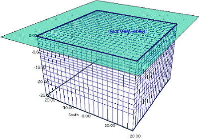

| 1.
|
First "discretize" the subsurface under the
area in which we are interested. |
| 2.
|
One cell of susceptible
material in the cellular subsurface |
4.
|
Five susceptible cells in
the descretized earth |
| 3.
|
Resulting magnetic anomaly
at 50o magnetic north. |
5.
|
Resulting magnetic anomaly
at 50o magnetic north. |
| |
|
6.
|
The same data set. Not
knowing what caused the anomaly, could you tell where
susceptibile blocks are, and how susceptible they are? |
| 7.
|
A complicated earth with
all cells susceptible to some degree. |
8.
|
Resulting
data over the complicated earth at 50° magnetic north. |
|

|